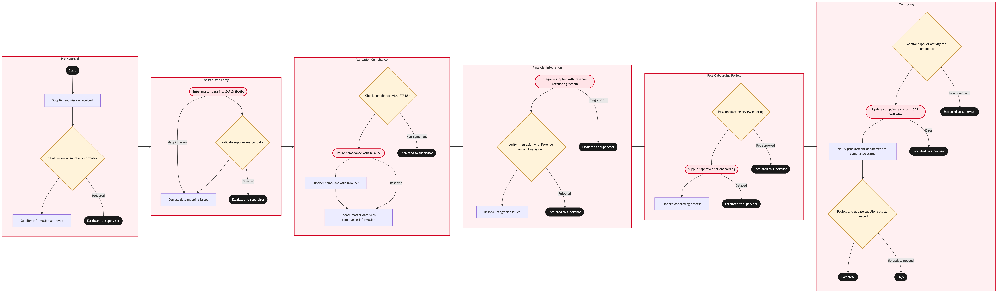

Updated 2026-08-21
Supplier Onboarding and Master Data
Process flow
Click to zoom

Process steps
▼
Phase 1 — Pre-Approval
3 steps
| Step | Activity | Role | System | Input | Output | KPI | Dec | Exc | Pain point |
|---|---|---|---|---|---|---|---|---|---|
| 1.1 | Supplier submission received | Procurement Analyst | SAP AribaA | Supplier details from procurement department | Supplier profile in SAP Ariba | Time to submit supplier data (in hours) | N | N | Delays in receiving supplier information can cause delays in onboarding. |
| 1.2 | Initial review of supplier information | Procurement Analyst | SAP AribaA | Supplier profile in SAP Ariba | Approved or Rejected status | Review time (in minutes) | Y | N | Incorrect data entries can lead to rejection and delays. |
| 1.3 | Supplier information approved | Procurement Analyst | SAP AribaA | Approved supplier profile | Approved status in SAP Ariba | Time to approval (in minutes) | N | N | Manual review process can be time-consuming. |
▼
Phase 2 — Master Data Entry
3 steps
| Step | Activity | Role | System | Input | Output | KPI | Dec | Exc | Pain point |
|---|---|---|---|---|---|---|---|---|---|
| 2.1 | Enter master data into SAP S/4HANA | Finance Data Entry Analyst | SAP S/4HANAA | Approved supplier profile from SAP Ariba | Supplier master data in SAP S/4HANA | Data entry time (in minutes) | N | Y | Data mapping issues can cause delays. |
| 2.2 | Validate supplier master data | Finance Data Entry Analyst | SAP S/4HANAA | Supplier master data in SAP S/4HANA | Validated status or Rejected status | Validation time (in minutes) | Y | N | Data validation errors can lead to rework. |
| 2.3 | Correct data mapping issues | Finance Data Entry Analyst | SAP S/4HANAA | Supplier profile from SAP Ariba | Corrected master data in SAP S/4HANA | Correction time (in minutes) | N | N | Manual corrections can be error-prone. |
▼
Phase 3 — Validation & Compliance
4 steps
| Step | Activity | Role | System | Input | Output | KPI | Dec | Exc | Pain point |
|---|---|---|---|---|---|---|---|---|---|
| 3.1 | Check compliance with IATA BSP | Finance Compliance Analyst | IATA BSPB | Supplier master data from SAP S/4HANA | Compliance status or Non-compliant status | Compliance check time (in minutes) | Y | N | Non-compliance can lead to financial penalties. |
| 3.2 | Ensure compliance with IATA BSP | Finance Compliance Analyst | IATA BSPB | Supplier profile from SAP Ariba | Compliance status in IATA BSP | Compliance resolution time (in minutes) | N | Y | Manual intervention may be required to resolve compliance issues. |
| 3.3 | Supplier compliant with IATA BSP | Finance Compliance Analyst | IATA BSPB | Compliance status from IATA BSP | Compliant status in SAP S/4HANA | Time to update compliance status (in minutes) | N | N | Manual updates can introduce errors. |
| 3.4 | Update master data with compliance information | Finance Data Entry Analyst | SAP S/4HANAA | Compliance status from IATA BSP | Updated supplier master data in SAP S/4HANA | Update time (in minutes) | N | N | Data entry errors can cause discrepancies. |
▼
Phase 4 — Financial Integration
3 steps
| Step | Activity | Role | System | Input | Output | KPI | Dec | Exc | Pain point |
|---|---|---|---|---|---|---|---|---|---|
| 4.1 | Integrate supplier with Revenue Accounting System | Revenue Accounting Analyst | Revenue Accounting SystemC | Updated supplier master data from SAP S/4HANA | Integrated supplier in Revenue Accounting System | Integration time (in minutes) | N | Y | System integration issues can cause delays. |
| 4.2 | Verify integration with Revenue Accounting System | Revenue Accounting Analyst | Revenue Accounting SystemC | Integrated supplier data from SAP S/4HANA | Verified status or Rejected status | Verification time (in minutes) | Y | N | Integration errors can lead to billing issues. |
| 4.3 | Resolve integration issues | Revenue Accounting Analyst | Revenue Accounting SystemC | Supplier profile from SAP Ariba | Resolved supplier data in Revenue Accounting System | Resolution time (in minutes) | N | N | Manual resolution can be time-consuming. |
▼
Phase 5 — Post-Onboarding Review
3 steps
| Step | Activity | Role | System | Input | Output | KPI | Dec | Exc | Pain point |
|---|---|---|---|---|---|---|---|---|---|
| 5.1 | Post-onboarding review meeting | Procurement Manager | SAP AribaA | Final supplier data from all systems | Review notes and approval status | Meeting duration (in minutes) | Y | N | Inconsistent data across systems can cause confusion. |
| 5.2 | Supplier approved for onboarding | Procurement Manager | SAP AribaA | Review notes and approval status | Approved status in SAP Ariba | Approval time (in minutes) | N | Y | Manual approvals can be slow. |
| 5.3 | Finalize onboarding process | Procurement Analyst | SAP AribaA | Approved supplier data from all systems | Complete onboarding status in SAP Ariba | Finalization time (in minutes) | N | N | Manual finalization can be error-prone. |
▼
Phase 6 — Monitoring
4 steps
| Step | Activity | Role | System | Input | Output | KPI | Dec | Exc | Pain point |
|---|---|---|---|---|---|---|---|---|---|
| 6.1 | Monitor supplier activity for compliance | Finance Compliance Analyst | IATA BSPB | Supplier data from SAP S/4HANA | Compliance status updates | Monitoring frequency (in days) | Y | N | Non-compliance can lead to financial penalties. |
| 6.2 | Update compliance status in SAP S/4HANA | Finance Data Entry Analyst | SAP S/4HANAA | Compliance updates from IATA BSP | Updated supplier data in SAP S/4HANA | Update time (in minutes) | N | Y | Manual updates can introduce errors. |
| 6.3 | Notify procurement department of compliance status | Finance Compliance Analyst | SAP AribaA | Compliance status from SAP S/4HANA | Notification to procurement department | Notification time (in minutes) | N | N | Manual notifications can be missed. |
| 6.4 | Review and update supplier data as needed | Procurement Analyst | SAP AribaA | Compliance status from SAP S/4HANA | Updated supplier data in SAP Ariba | Review time (in minutes) | Y | N | Data discrepancies can lead to errors. |
Swim lanes
Procurement Analyst1.1 1.2 1.3 5.3 6.4
Finance Data Entry Analyst2.1 2.2 2.3 3.4 6.2
Finance Compliance Analyst3.1 3.2 3.3 6.1 6.3
Revenue Accounting Analyst4.1 4.2 4.3
Procurement Manager5.1 5.2
Systems touched
SAP AribaASAP S/4HANAAIATA BSPBRevenue Accounting SystemC
Key performance indicators
- Time to submit supplier data (in hours)
- Review time (in minutes)
- Time to approval (in minutes)
- Data entry time (in minutes)
- Compliance check time (in minutes)
Risks and control points
- Delays in receiving supplier information
- Manual review process can be time-consuming
- Data mapping issues can cause delays
- Non-compliance with IATA BSP can lead to financial penalties
- System integration issues can cause delays
Air Canada Process Wiki — process and systems reference compiled from public sources
for IT Application Management and User Support pre-sales discovery.
Built 2026-08-21. Every system carries an evidence tier: tier C is an industry pattern and tier U is an open
question, and neither should be asserted as fact about Air Canada without confirmation in discovery.
Not affiliated with or endorsed by Air Canada. Air Canada, Aeroplan and Altitude are trademarks of Air Canada.